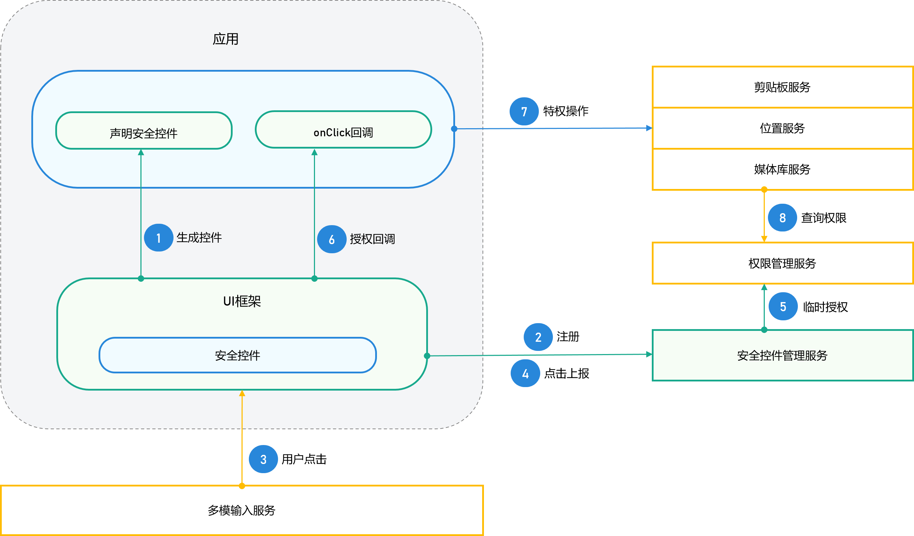
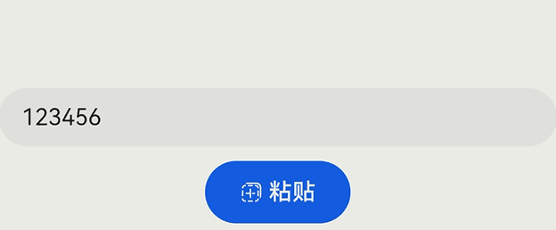
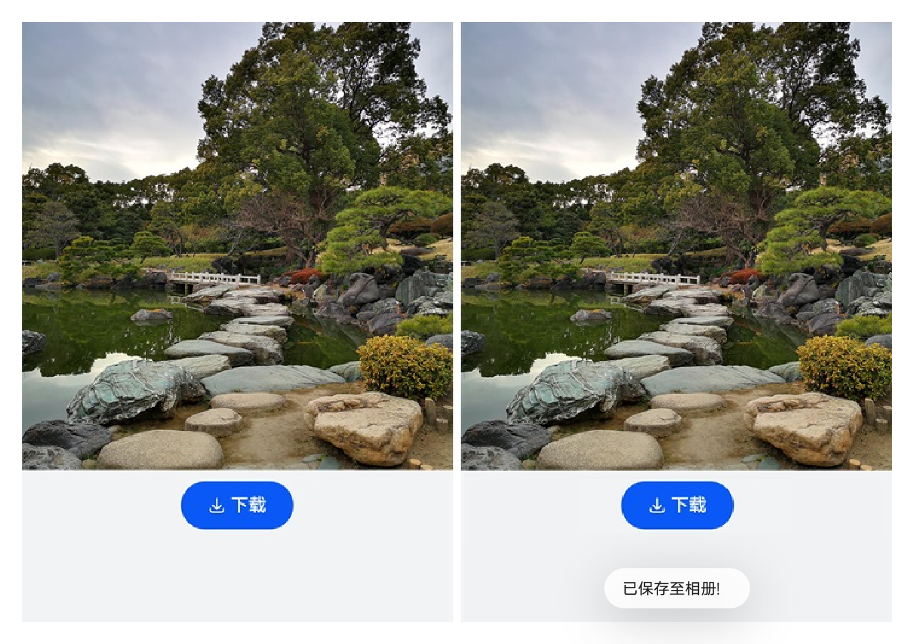
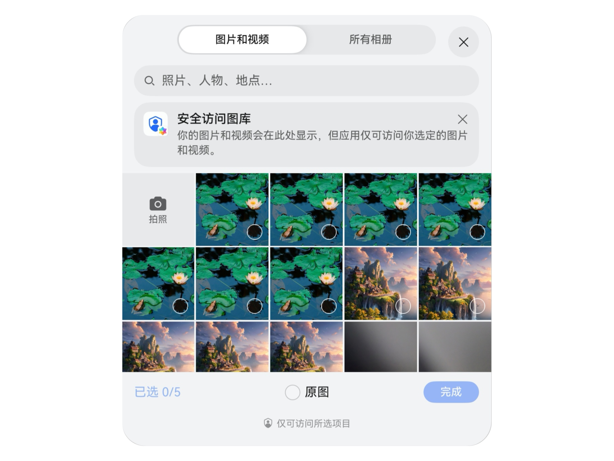
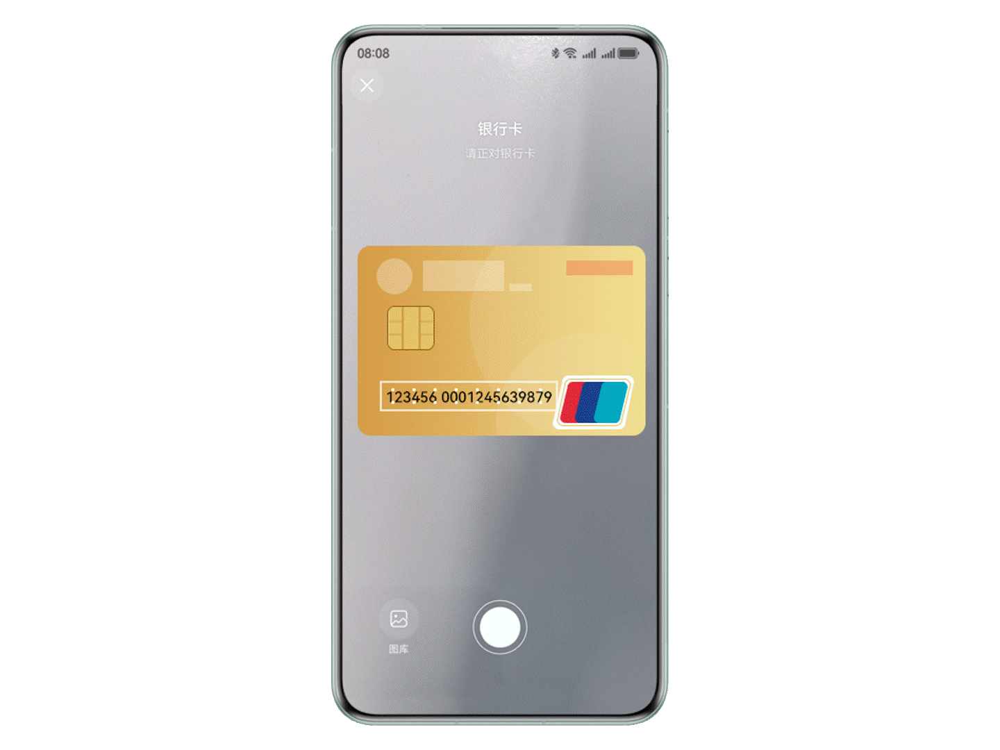
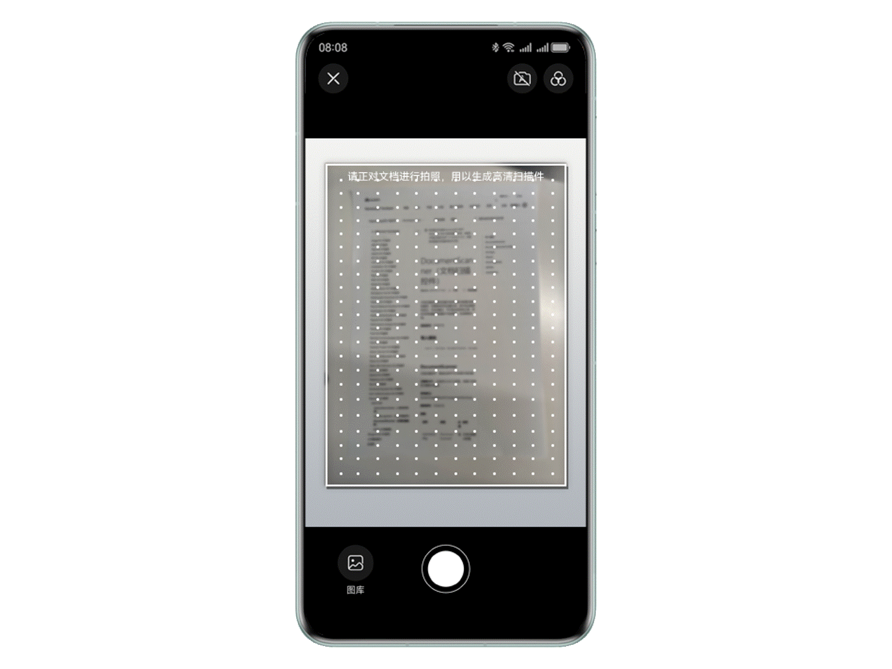
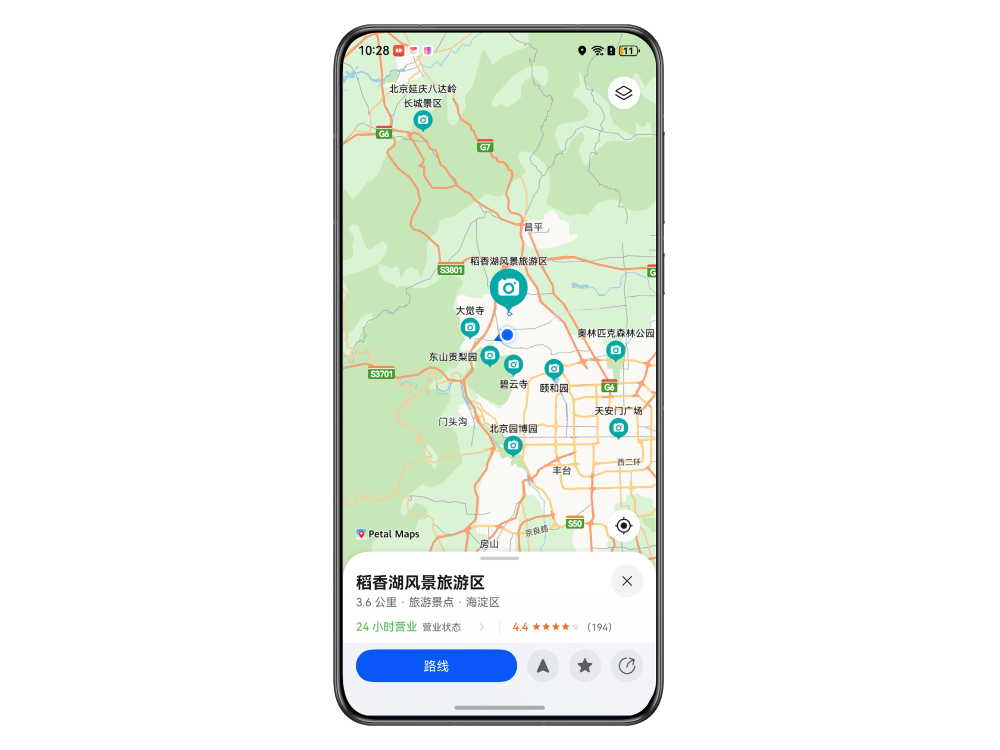
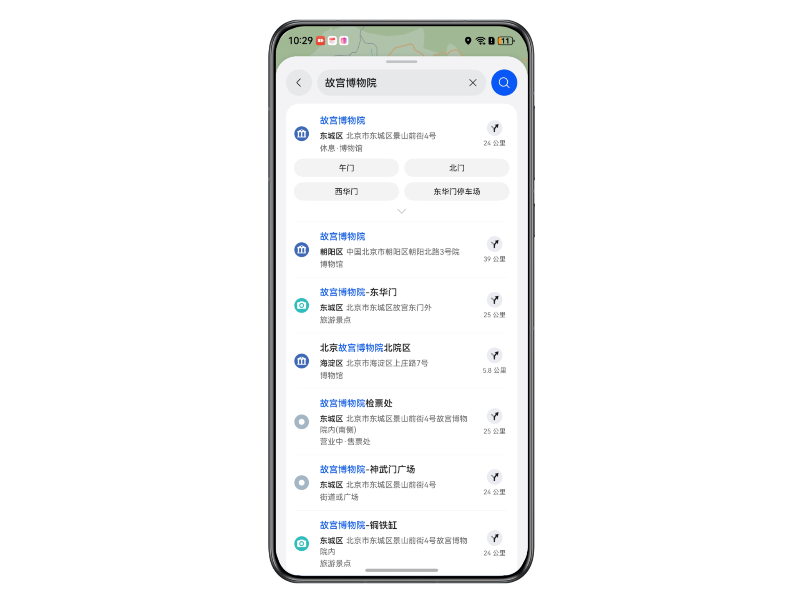
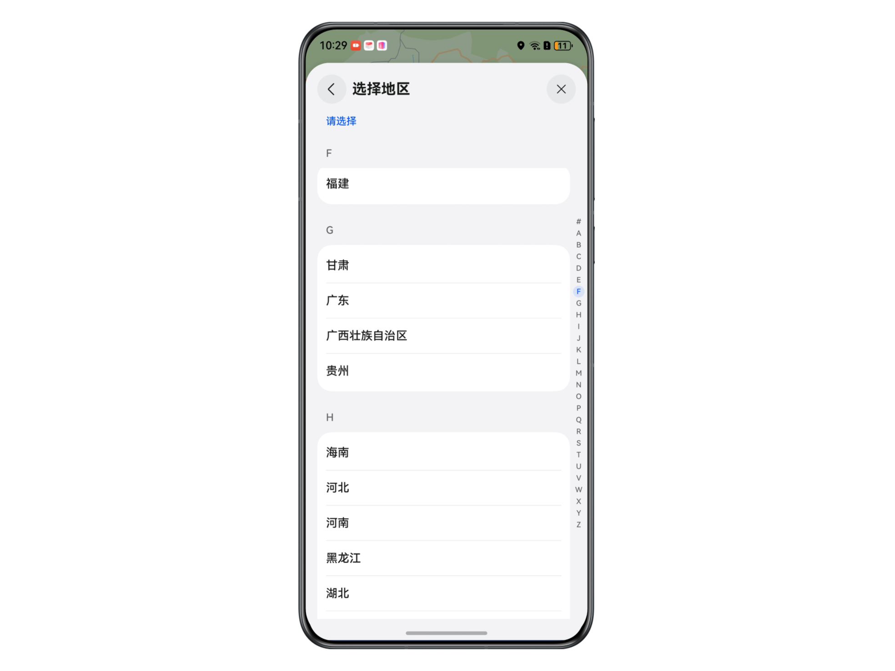

1 Picker: A Safer Experience Led by Users
1.1 Privacy and Security Overview
As personal privacy and security become increasingly important, HarmonyOS innovations in privacy and data protection are reshaping system-level security and creating a safer operating-system experience.
The system provides security components and system pickers, allowing apps to conveniently access system resources. Both methods use an independent system process. When an app launches a system picker or displays a security component, the user must actively operate it to obtain a resource or result. This avoids additional permission requests and further protects privacy and security through active user participation.
1.2 Security Components
Security components are system-implemented ArkUI components. By integrating them, an app can grant authorization automatically after the user taps, without displaying a permission dialog. They act as "special buttons" in the app UI, enabling a tap-to-permit design.
Compared with dynamic permission requests, security components use scenario-based authorization to simplify operations for developers and users. The main benefits are:
- Users control when authorization occurs, minimizing the authorization scope.
- The authorization scenario matches the user's actual intent.
- Fewer disruptive dialogs.
- Developers do not need to request permissions from the app marketplace, simplifying operations.
1.2.1 How Security Components Work
The operating mechanism consists of the security-component UI, security-component management service, and security enhancements:
- UI component: Provides a consistent text and icon style for easy recognition and offers rich customization capabilities.
- Component management service: Manages component registration, temporary authorization, and authorization validity periods, ensuring that apps cannot register or use security components in the background or on the lock screen.
- Security enhancements: Use address randomization, challenge-value checks, callback UI verification, caller-address checks, component anti-overlay protection, and genuine-tap validation to prevent developers from abusing authorization through obfuscation, hiding, tampering, or spoofing and exposing user privacy.
The operating flow when developers call the API is shown below.

1.2.2 Security Component Summary
[IP_ADDRESS] Paste Component
After an app integrates the paste component, the user can tap it and the app can read clipboard data without displaying a dialog. It can be used whenever an app needs to read clipboard data, avoiding interruptions caused by permission dialogs.
For example, a user may copy a verification code outside the app, such as from a text message, and need to paste it in the app. Previously, after opening the app, the user had to long-press the input field and tap Paste in the displayed menu. With the paste component, the user can simply open the app and tap the Paste button to complete the operation in one step.

Note that input fields using ArkUI automatically integrate the paste component into the long-press menu.
[IP_ADDRESS] Save Component
The save component is a special security component that allows users to temporarily obtain storage access by tapping a button, without confirming authorization in a permission dialog. It can be used whenever an app needs to save files to the media library, such as images or videos.
After the save component is integrated, the app is authorized to access privileged media-library APIs for 10 seconds when the user taps it. This applies to any scenario in which an app needs to save files to the media library, such as images or videos.

The save component can only be integrated into ArkUI pages. If a third-party framework such as Flutter is used, this functionality is unavailable; such apps can refer to Save User Files to meet their requirements.
1.3 System Pickers
1.3.1 Introduction to Pickers
A system picker is a way to launch a system resource. Because a system picker has preauthorization for the required permissions, developers can use it to temporarily access the corresponding resource with restrictions, without requesting the permission again.
Common scenarios for launching system apps with system picker components include Contacts Picker, Map Picker, Camera Picker, QR code Picker, ID and document recognition Picker, document scanning Picker, File Picker, Audio Picker, and Photo Picker (PhotoViewPicker). For details, see Launching System Apps.
1.3.2 Picker Summary
[IP_ADDRESS] Photo Picker
PhotoViewPicker allows developers to launch the system gallery through a specific interface. Users select the resources to share, and the sharing operation is then completed. This picker is based on the photoAccessHelper album management module, which provides album management capabilities such as creating albums and accessing or modifying media data in albums.
PhotoPicker can also be used to access images and videos. After the user selects the required image resource, the resource is returned directly, allowing the app to access and read the image or video without granting it permission to read image files.

Reference Examples
- The video course explains how to scan local images with a picker in a QR code scanning scenario. For details, see Build Powerful QR Code Scanning Capabilities for Apps Quickly;
- The cloud development service article implements image upload and image-address return using cloud storage. For details, see Cloud Development Service (ArkTS) - 9.4 Managing Files with Cloud Storage
[IP_ADDRESS] Contacts Picker
Contacts Kit provides the Contacts Picker, which launches the Contacts app and reads contact data.
Contacts Picker: When the user selects a contact, the picker launches the contact list and guides the user through the UI operation. The interface itself does not require permission.
This capability is available on a restricted basis and requires the restricted permissions ohos.permission.READ_CONTACTS or ohos.permission.WRITE_CONTACTS. Third-party apps are generally not allowed to request these permissions; only apps that meet the specified scenarios may request them.
[IP_ADDRESS] File Picker
DocumentViewPicker is used to select and save files. The resources selected by DocumentViewPicker come from FilePicker, which manages file resources. File types are not distinguished by extension, so browser-downloaded images, documents, and similar items are all treated as files.
Reference Example
The file management example explains how to use DocumentViewPicker's save() method to create a file in the user directory and return its URI, and the select() method to choose a file to access and return its URI. For details, see Implementing File Management - 6. Reading and Writing Files in the User Directory
[IP_ADDRESS] Camera Picker
Camera Kit provides the camera picker module, which supports taking photos and recording videos. Apps can choose the media type for these operations. These interfaces must be called in a UIAbility; otherwise, the cameraPicker app cannot be launched. For details, see Camera Picker.
If developers only need to launch the system camera to take a photo or record a video, they can use CameraPicker directly. No camera permission is required; the system camera launches directly to complete the operation.
Developers must call the system camera (CameraPicker) in release mode. An exception is displayed in debug mode.
[IP_ADDRESS] ID and Document Recognition Picker
The ID and document recognition component provides structured recognition for identity cards (currently, only second-generation identity cards from mainland China, excluding bilingual Chinese and ethnic-minority identity cards), vehicle licenses, driver's licenses, passports, bank cards, and other documents. It supports automatic document classification, allowing the system to identify the document type and return structured information and document images.
For scenarios that require filling in ID or document information, such as identity card or bank card information, the ID and document recognition component can read OCR (Optical Character Recognition) information and return the result for use. It supports recognizing the front, the back, or both sides simultaneously.

Using this component creates a dialog displayed in full-modal mode. Therefore, launching or exiting the component triggers lifecycle changes in the host page: onPageHide is triggered when it launches, and onPageShow is triggered when it exits.
Reference Example
The scenario-based visual services article introduces ID and document recognition, including recognition of identity cards, vehicle licenses, and driver's licenses. For details, see Machine Learning - Scenario-Based Visual Services.
[IP_ADDRESS] Document Scanning Picker
The document scanning component provides a service for photographing documents and converting them into high-definition scans. Simply photograph a document with a phone to automatically crop and enhance it, then save or share the image. It also supports photographing or selecting images from the gallery to recognize tables and generate table documents.
It is widely applicable to educational and office scenarios, allowing users to scan documents, receipts, classroom PPTs, and books and output images for sending or archiving.

Reference Example
The scenario-based visual services article also introduces document scanning, including photographing a document or selecting a document image from the gallery and converting it into a high-definition scan, as well as photographing or selecting an image from the gallery to recognize a table and generate a table document. For details, see Machine Learning - Scenario-Based Visual Services.
[IP_ADDRESS] Map Picker
The Map Picker in Map Kit provides controls for displaying place details, selecting places, and selecting administrative regions.
Place Details
Without developing a map page yourself, you can quickly implement place-detail display functionality. For details, see Displaying Place Details.

Place Selection
Without developing a map page yourself, you can quickly implement place selection. For details, see Selecting a Place.

Region Selection
The region selection control can load regional information for the whole world or a specified country. It supports viewing lower-level regions of the selected region and recommending popular regions. For details, see Region Selection.

[IP_ADDRESS] Audio Picker
AudioViewPicker is used to access and save image or video files in public directories. Its selectable resources come from FilePicker. Reference links:
1.4 Summary
This article focuses on common approaches to implementing security features through security components and system pickers, providing developers with practical ideas and preliminary implementation plans. Note that HarmonyOS security measures extend far beyond the content above. For more information, see the relevant guidelines and best practices. Developers should adopt more comprehensive and specific measures to ensure app security based on the app type, target users, and applicable privacy regulations.